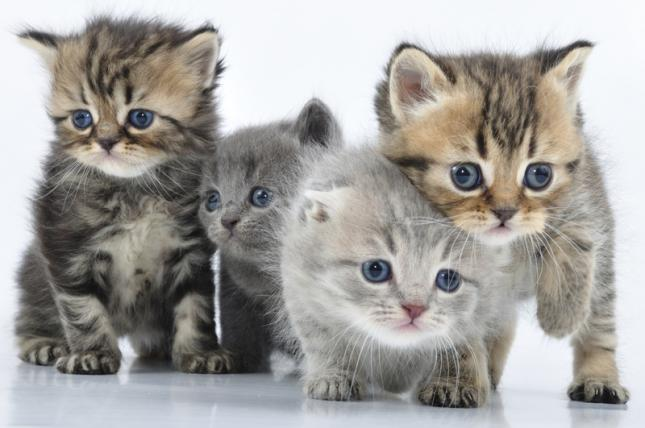
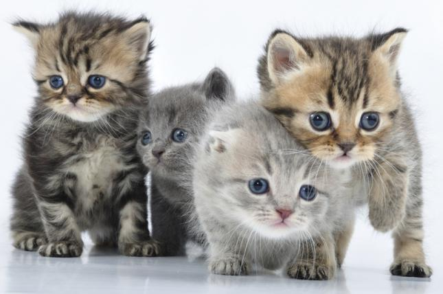

Misión
Ayudar a los perros y gatos en situación de calle, mediante la consecución de hogares de paso o definitivos. Así como auxiliar a los que se encuentren en malas condiciones de salud, proporcionándoles los servicios médicos a través de las clínicas veterinarias de Pereira y sus alrededores. Esterilizándolos para prevenir la reproducción indiscriminada de los mismos, evitando así el aumento de la población de animales en condición vulnerable.
Visión
Constituirse en la mayor red de ayuda para los animales en condición vulnerable en la ciudad de Pereira y sus alrededores, mediante la vinculación de voluntarios, recolección de donaciones y cualquier tipo de ayudas ya sea del sector empresarial y/o particular, de la difusión en medios de comunicación, educación de la comunidad en materia de tenencia responsable de animales de compañía, llegando a la meta de ayudar a más de 1000 animales en el año 2016.
 
